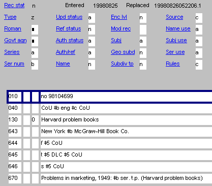

|
|
Creating the authority record
- Open OCLC Connexion
- Go to Authorities drop-down menu
- Select "Create"
- Select "Single record"
- Select "Series". At this point the series template should appear
- Adjust ser num if necessary
- "a" = numbered
- "b" = unnumbered
(template default)
- "c" = numbering varies
- Ref status
- "a" = references
- "n" = no references
- Series defaults to the value "a" (monographic series). If necessary,
change this to the appropriate code:
- "b" = multi-part item Click
here for a definition
- "c" = series-like phrase
- "z" = other
- "n" = not applicable
- Name defaults to the value "n". If the heading is a name/title,
change this value to "a"
- Input the heading and references
- Input the 670
- If the series is numbered, input the 642 field. The 642 contains
both the designator when present, and the number. It always includes the
symbol for PCC, and Princeton's NUC symbol:
642 2 |5 DPCC |5 NjP
642 no. 12 |5 DPCC |5 NjP
It should be positioned after the references and before the 643 field.
- Input the 643 field. This field is similar to the 260 field with
certain exceptions: there is no colon before the subfield b, and brackets
are omitted. All publishers appearing on the same item are given in one
643 field. Varying information from different items are given in separate
643 fields. It should be positioned after the references (and the 642
field when given) and before the 644 field.
- If the ISSN is readily available without any special searching,
enter it in a 022 field. Use this format: 0000-0000. Do not include
for multi-part items.
EXAMPLE

|